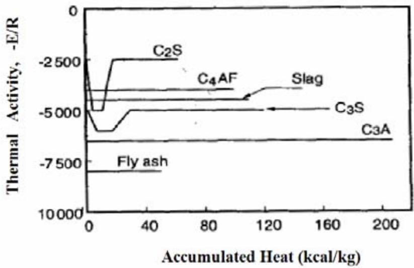
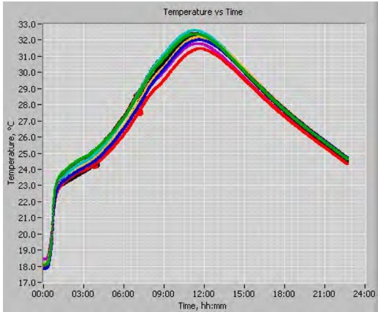
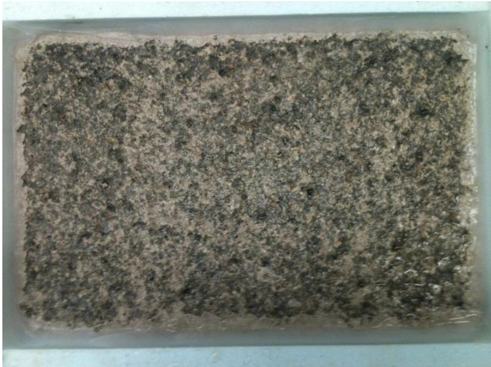
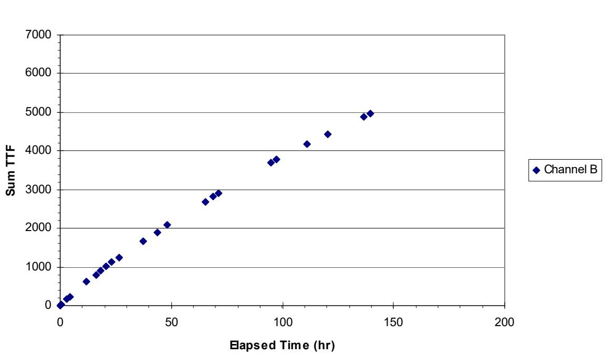
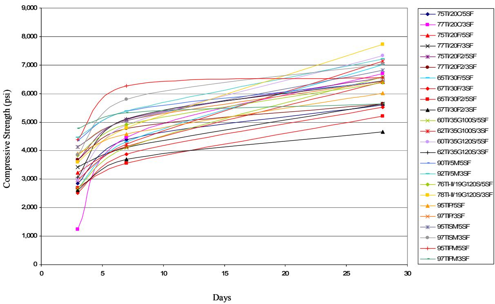
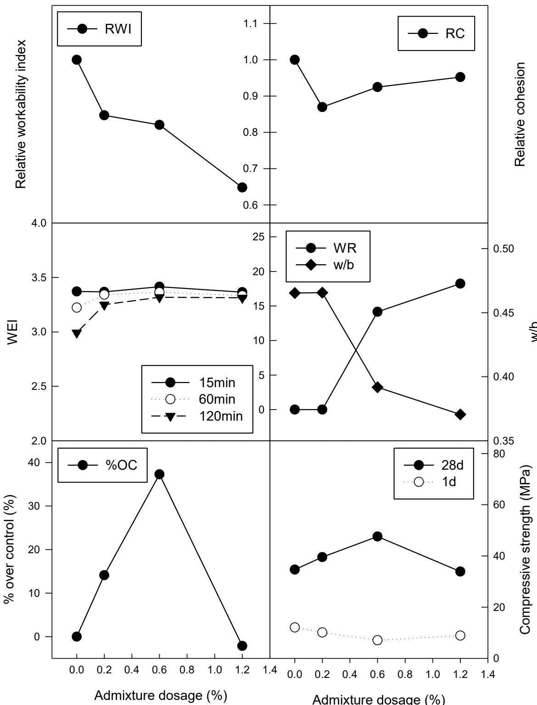
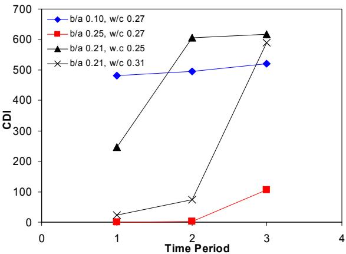

Chemical Admixtures for Concrete
Chemical admixtures are supplementary ingredients added to concrete batches before or during mixing to modify fresh, setting, and hardening properties without serving as primary binding agents [1]. As a specific functional component within the broader domain of Cementitious Materials & Chemistry, they differ from water, aggregates, cementitious materials, and fiber reinforcement by being non-pozzolanic, mostly organic, physio-chemical substances typically supplied as water-based solutions or suspensions with an active chemical content of 35–40% [1]. Used in small dosages (generally less than 5% by mass of cement), they play a decisive role in economically enhancing concrete properties and influencing the kinetics of cement hydration [1][6]. For instance, air-entraining agents introduce microscopic bubbles to enhance freeze-thaw durability, while Cement-Admixture Compatibility addresses the broader chemical interactions that influence hydration kinetics and setting behavior [2], [3]. These aspects differ in scope, with the former targeting specific physical protection mechanisms and the latter focusing on fundamental reactivity between the admixture and cementitious materials [2], [3].
Sources (23)
Sub-concepts (2)
Mechanisms of Action
Admixtures work by one or more of the following actions (Dransfield 2003):
- Chemical interaction with cement hydration — acceleration or retardation
- Adsorption onto cement surfaces — particle dispersion (plasticizing/superplasticizing)
- Affecting water surface tension — increased air content
- Affecting water rheology — increased plastic viscosity or cohesion [1]
Retempering concrete with superplasticizer after prolonged mixing causes a smaller decrease in compressive strength compared to retempering with water alone. [4]
Unusually long mixing times may cause erratic air contents, which are highly dependent on the specific type of admixtures used in the mixture. [4]
The rate and total amount of heat liberated during hydration are highly sensitive to the chemical composition and physical properties of both the cement and the specific chemical admixtures used. Monitoring these thermal characteristics enables the detection of deviations in constituent quantities, particularly regarding the type and dosage of cementitious materials. [3]

Thermal activity of each component (adapted from Maekawa et al. 1999) [3]In two-stage concrete mixing processes where air-entraining admixtures (AEA) are added to a cement slurry, their effectiveness is reduced because fine cementitious particles absorb the AEA, resulting in lower total air content and an increased air void spacing factor. [5]
 Effects of mixing method on the air content of fresh concrete [5]
Effects of mixing method on the air content of fresh concrete [5]
Adding mixing water in multiple stages, such as coating aggregates with a low water-to-cement ratio slurry before adding the remainder of the water, reduces the thickness of the interfacial transition zone (ITZ) and increases its micro-hardness. [5]
Calorimetry tests utilizing semi-adiabatic or isothermal devices can predict mortar set time and early-age strength up to two days by analyzing heat indexes derived from the first derivative of the calorimeter curve and the area under it. [6]
Semi-adiabatic calorimeters allow a maximum heat loss of less than 100 J/(h⋅K) to the environment, whereas adiabatic calorimeters maintain temperature loss below 0.02 k/h. [6]
 AdiaCal calorimeter unit [6]
AdiaCal calorimeter unit [6]
Adiabatic calorimeters typically require as long as a week to complete, while semi-adiabatic tests are generally completed more quickly in approximately 24 hours. [6]

Typical sample temperature profiles from the AdiaCal tests [6]The new calorimeter test is generally completed quicker than ASTM C 186, in approximately 24 hours. [6]
 Comparison of the set times from ASTM C 403 and calorimetry tests [6]
Comparison of the set times from ASTM C 403 and calorimetry tests [6]
For a high cement content, decreasing the water-to-cement ratio reduces setting time because closer cement grains require less time for hydration products to become interconnected. [7]
The modified BNQ test method (ASTM WK 9367) incorporates a wood screed finishing technique and insulated slab sides, along with a seven-day pre-saturation period using a 3 wt% NaCl solution to better simulate field conditions for concrete containing slag cement. [8]

BNQ (VDOT curing) exposure for Mix #13 50%LA 50%SG120 0.42w/c at 25 cycles where finer sized pieces of scale were observed [8]The Nurse–Saul method (ASTM C 1074) is used to generate concrete maturity curves based on temperature and time data recorded for up to 28 hours to monitor the rate of cement hydration. [9]
 (a). Concrete temperatures versus time for heat of hydration [9]
(a). Concrete temperatures versus time for heat of hydration [9]
Major Categories
- Water reducers — normal (type A, ≤12% water reduction) and high-range (type F, >12% water reduction, superplasticizers)
- Retarders — slow cement hydration to extend working time window
- Air entraining admixtures (AEA) — stabilize air voids for freeze-thaw resistance
- Dry cast products — formulated for drier concrete mixtures [1]
Fly ash replacement in binary cements generally reduces water requirement for a given consistency, allowing it to function as a natural water-reducing agent that improves flowability without additional chemical admixtures. [10]
In concrete patching mixes, the addition of water reducers can result in lower early strengths and necessitate longer curing times compared to unmodified mixes. [11]

Maturity curve for Patch 11, eastbound lane [11]Calcium chloride is an accelerating admixture that can enable rapid strength gain, allowing concrete patches to reach opening flexural strengths of 0 psi and compressive strengths of 600 psi within just 1.5 hours after construction. [11]
The use of calcium chloride as an admixture is restricted to deteriorated concrete or overlay preparation due to its detrimental impacts on the pavement structure and reinforcement. [11]
A specialized Class PP concrete mix formulation utilizes a combination of high-range water reducers and calcium chloride alongside a cement factor of 735 lbs per cubic yard to optimize performance in ambient air temperatures above 70°F. [11]
In exposed aggregate concrete pavement construction, a set-retarding agent is applied to the newly placed surface; after approximately 24 hours, the top mortar layer is brushed or washed away to expose the underlying durable aggregates. [12]
 Finished exposed aggregate surface [12]
Finished exposed aggregate surface [12]
For exposed aggregate pavements requiring high durability, specifications often mandate a maximum water-to-cement ratio of 0.38 combined with a minimum cement content of 450 kg/m³ (758.5 lb/cu yd) alongside plasticizers and air entrainers. [12]
In pervious concrete applications, water reducers modify the water/cement ratio while retarders delay hydration of the very dry mix to ensure sufficient time for placement and curing. [12]
An air-entraining agent is a specific category of chemical admixture used to introduce microscopic air bubbles into concrete [20]. These agents stabilize small air bubbles within the mix to improve workability and enhance durability in freeze-thaw conditions by protecting against damage from freezing pore water expansion [15].
To mitigate freeze-thaw damage in pervious concrete, polymer additives have been incorporated into mixes alongside higher cement content to significantly improve service life compared to earlier formulations. [12]
Adding high-range water reducers dissolved in water as a single dose and allowing sufficient mixing time enhances their function in high-performance concrete. [4]
In pervious concrete, latex polymer admixtures can increase split tensile strength to approximately 90% of flexural strength, compared to the typical 65% ratio observed in standard mixes. [13]
The addition of sand or latex admixtures to pervious concrete significantly improves freeze-thaw durability, with specific optimized mixes showing only 2% mass loss after 300 cycles. [13]
In concrete mixes containing highly reactive fine aggregates like chert, supplementary cementitious materials (SCMs) such as Class F fly ash, ground granulated blast furnace slag (GGBFS), and silica fume are required to mitigate alkali-silica reactivity (ASR). [14]
 ASR filled cracks and rims [14]
ASR filled cracks and rims [14]
Ternary concrete mixes utilizing multiple SCMs can provide higher mitigation against expansive mechanisms like ASR while avoiding the risks associated with high volumes of any single supplementary cementitious material. [14]
Synthetic or non-vinsol air entraining agents can lead to unstable air systems characterized by clustering and coalescing of air bubbles, which compromises freeze-thaw durability. [14]
 Air bubble coalescence in Core 6 [14]
Air bubble coalescence in Core 6 [14]
Increasing the total air content of a concrete mix to levels exceeding six percent ensures an acceptable bubble spacing factor, thereby improving freeze-thaw durability despite causing a minor reduction in compressive strength. [14]
 Entrained air in the concrete vs. spacing factor [14]
Entrained air in the concrete vs. spacing factor [14]
Metakaolin addition typically increases water demand, necessitating a larger dosage of water-reducing admixture to maintain workability. [15]
Silica fume, composed almost entirely of sub-micron amorphous silica particles, requires high-range water reducers due to its tremendous surface area. [15]

Strength gain for mortar mixtures containing silica fume [15]Metakaolin is beneficial in reducing drying shrinkage when compared to silica fume concrete. [15]
The two-stage concrete mixing method can increase compressive strength by 5 to 10 percent compared to conventional mixing while significantly improving concrete uniformity through reduced standard deviation in test results. [5]
The typical active chemical content in commercial admixtures ranges from 35% to 40%, with dosage rates generally kept below 5% by mass of cement and most commonly applied between 0.3% and 1.5%. [1]

Relative properties of P-13 admixed concrete mixtures [1]Normal water reducing admixtures typically consist of salts of lignosulphonic acids and their modifications, salts of hydrocarboxylic acids and their modifications, or derived versions that adsorb onto cement particles to lower inter-particular attraction. [1]
The RapidAir test serves as an effective measurement technique specifically for determining the entrained air void structure in pervious concrete, addressing its complex void system that includes both small-sized entrapped/entrained air and larger interconnected porosity between paste-coated aggregate particles. [16]
The addition of air entrainment to pervious concrete increases its paste volume, which improves both the workability and durability of the mixture. [16]
Water-reducing agents decrease the water-to-cement ratio to reduce concrete porosity, thereby improving resistance to de-icing salts and acidic waters. [7]
 Dispersing action of water-reducing agents a) flocculated paste and b) dispersed paste [7]
Dispersing action of water-reducing agents a) flocculated paste and b) dispersed paste [7]
Increasing supplementary cementitious materials content up to a limit improves impermeability, thermal cracking resistance, and alkali-aggregate expansion control while reducing pore size and calcium hydroxide content. [7]
In accelerated concrete mixtures designed for early opening, high dosages of accelerating admixtures have historically been associated with poor long-term performance, prompting a shift toward non-chloride alternatives when schedule constraints necessitate rapid strength gain. [17]
The use of non-chloride accelerating admixtures is recommended as a safer alternative to traditional chloride-based accelerators for maintaining reasonable roadway closure times without compromising reinforcement durability. [17]
Vinsol resin is utilized as the primary air-entraining admixture in scaling resistance evaluations to ensure adequate freeze-thaw durability when testing concrete mixtures containing supplementary cementing materials. [8]
The addition of a Micro-Air Type AE air entraining agent, Delvo retarding agent (ASTM Type D), and Rheobuild 1000 (Type MR) water reducer can be used to achieve better performance in concrete mixes containing specific coarse aggregates like high-calcium limestone or granite. [9]
Industry Trends
Communications with US admixture manufacturers revealed the industry is advancing toward purified lignosulfonates (lignin-based), polycarboxylates (PC-based), and their blends. Naphthalenes and melamines are no longer widely manufactured or used. [1]
The industry is shifting from conventional industrial by-products toward synthetic polymers specifically engineered for the concrete industry to enhance sustainability. [1]
Use in Roller-Compacted Concrete
The effectiveness of chemical admixtures is lower in Roller-Compacted Concrete than in conventional concrete due to low water and paste content. Higher than normal dosages are required. The mixer technology (e.g., pugmills) may limit effectiveness of some admixtures. [1]
In roller-compacted or low-slump applications, ternary cement blends can maintain flowability comparable to ordinary Portland cement concrete when slag and fly ash are combined, offsetting the water-increasing effect of slag with the water-reducing properties of fly ash. [10]
 Effect of slag on ternary cement concrete heat signature [10]
Effect of slag on ternary cement concrete heat signature [10]
Water reducers in roller-compacted concrete can significantly reduce cement costs while enhancing pavement durability and service life through a substantial reduction in the water-to-binder ratio. [1]
Dry cast products serve as a cost-effective admixture solution that improves specific fresh properties of roller-compacted concrete. [1]
Fresh Concrete Quality Control
The Air-Void Analyzer (AVA) measures fresh concrete parameters including spacing factor and specific surface within 25–30 minutes, allowing for immediate adjustments to the batching process before the concrete hardens. [18]
A new workability characterization method based on gyratory compaction has been developed for pervious concrete, providing quantifiable values to assist in designing mixtures for specific compaction methods and allowing placeability quantification for overlay development. [16]

Effect on placeability of mixing time [16]The AVA device captures only air voids smaller than 3 mm (0.12 in.), and its test precision is significantly influenced by environmental factors such as temperature, vibration during production, and time delays between sample preparation and data recording. [18]
The provided text does not contain information verifying cement-admixture compatibility through slump loss rate measurements or discussing premature stiffening. The passages focus on scaling performance under different curing methods [8], the evaluation of concrete uniformity in plastic and hardened states [2, 3], and field studies on mixing time and between-batch uniformity [4]. Consequently, the specific claim regarding slump loss as a verification method for chemical admixture compatibility is not supported by the source material.
While commonly accepted criteria for fresh concrete include an air content of 6% and a spacing factor less than 0.008 in. (200 µm), empirical studies indicate that mixes failing these AVA thresholds can still exhibit resistance to certain levels of frost action. [18]
Self-Consolidating Concrete Properties
The addition of nano-clay materials such as Actigel significantly increases the yield stress, viscosity, and thixotropy of cement-based materials, which controls the timely shape-holding ability through quick viscosity recovery after shearing ceases. [19]
Water reducers and air-entraining agents function by reducing the thixotropy of cement-based materials, thereby facilitating better flow during extrusion processes. [19]
Shrinkage-reducing admixtures effectively mitigate the noticeably higher drying shrinkage observed in self-consolidating concrete compared to conventional mixes under standard lab drying conditions. [19]
Specific nano-clay additives like Metamax decrease the drying shrinkage of self-consolidating concrete, whereas Actigel and Concresol increase it when added at 2% by weight of cementitious materials. [19]
Optimal green strength for self-consolidating concrete is achieved at 1.3 to 2.5 kPa when the flow diameter ranges from 41% to 47%, ensuring sufficient shape stability without compromising compaction. [19]
Limiting Water-to-Binder Ratios
For non-air-entrained concrete made with Type IP cement (blended with 25% Class F fly ash), a limiting water-to-binder ratio of 0.26 is required to achieve a freeze-thaw durability factor of at least 85%, whereas concrete using Type I cement with Class C fly ash requires a significantly lower limiting w/b of 0.19. [2]
Ternary Mix Optimization
The interaction between supplementary cementitious materials (SCMs) varies depending on the specific materials used and their relative quantities in the mixture, requiring optimization through trial batching to achieve desired performance. [20]
Pre-Blended Cement Benefits
Pre-blended cements containing optimized gypsum content ensure well-distributed supplementary cementitious materials without requiring additional capital investment from ready mix producers. [20]
Life Cycle Cost Reduction
Ternary blended cement concrete mixtures containing fly ash, GGBFS, silica fume, metakaolin, or other pozzolans reduce life cycle costs compared to ordinary portland cement concrete. [20]
Plant Investment Recovery
Ready mix plants can recover the investment for additional silos used to store supplementary cementitious materials like fly ash within less than 10,000 cubic yards of concrete production. [20]
Carbon Emission Reduction
Ternary blended cement mixtures can save more than 10,000 tons of carbon dioxide from being emitted into the atmosphere for just 10 miles of a six-lane concrete pavement. [20]
Mortar vs Concrete Setting Time
The mortar setting time test uses a sample with normal consistency to compare cementitious combinations but does not indicate the actual setting time of the concrete that will be placed in a project. [20]
Concrete Penetration Testing
Concrete penetration resistance testing allows for the actual mixture design intended for job site placement to be tested, providing accurate data on setting time despite environmental influences. [20]
Pervious Concrete Admixture Optimization
The addition of a super absorbent polymer (SAP), specifically a crushed crystalline partial sodium salt of cross-linked polypromancic acid, to pervious concrete allows for internal curing by absorbing extra water and swelling, which improves hydration efficiency. This SAP lubrication effect typically enables a one-third to one-half reduction in the dosage of other admixtures such as polycarboxylate water reducers and air entrainers while maintaining performance. [21]
In pervious concrete mixes utilizing super absorbent polymers, the lubrication provided by the hydrated SAP gel enhances admixture efficiency, allowing for significantly lower dosages of polycarboxylate water reducers and air entrainers compared to conventional pervious concrete formulations. [21]
Pervious concrete mixes incorporating super absorbent polymers can achieve comparable performance with lower cement content and higher water-to-cement ratios than baseline mixes, as the polymer manages internal curing requirements without increasing total water demand. [21]
3D Printing Concrete Properties
The addition of viscosity modifying agents (VMAs) to 3D printing mortars decreases flowability and extrudability but significantly increases buildability and shape-holding ability by enhancing thixotropy. Conversely, increasing the dosage of superplasticizer enhances flowability and extrudability but reduces buildability, requiring careful optimization of admixture ratios. [22]
In 3D printable concrete mixtures, a water-to-binder ratio below 0.30 results in unacceptable flowability and extrudability, causing feeding difficulties or nozzle blockage, while excessive ratios lead to structural deformation such as slump due to insufficient stiffness development. [22]
The use of a highly flowable, rapid-set grout (up to 20% replacement of cement) accelerates setting behavior and enhances buildability in 3D printing mortars, allowing for smooth extrusion and shape retention without the need for complex admixture combinations. [22]
3D printed concrete exhibits anisotropic mechanical properties due to layer-by-layer deposition; compressive strength loaded parallel to filaments is much lower than when loaded perpendicular to them, likely due to potential buckling of the filaments under compression. [22]
Defects such as air bubble pop-outs, discontinuity, and slumping in 3D printed concrete are primarily related to flow behavior, while cracking is mainly caused by plastic shrinkage, necessitating prompt curing to maintain structural integrity. [22]
SAP Mechanical Property Impact
The incorporation of SAPs into concrete generally decreases compressive strength by approximately 8% at 28 and 56 days compared to control mixtures, a reduction attributed to the voids left behind after the polymer particles release their stored water. [23]
SAP Permeability Effects
SAP-containing concrete exhibits higher permeability than control mixes due to incomplete water absorption by the polymer, which increases the effective water-to-cement ratio and creates a more porous matrix structure. [23]
SAP Setting Time Effects
The addition of SAPs slightly delays both initial and final setting times relative to unmodified concrete, likely resulting from an increase in the effective water-to-cement ratio due to insufficient water absorption by the polymer during mixing. [23]
SAP Crack Healing Mechanism
In hardened concrete, SAP particles remain structurally intact during drying and will swell again upon rewetting, allowing them to potentially fill and heal cracks up to 100 μm wide if water penetrates the system. [23]
Related concepts
- Roller-Compacted Concrete — admixture use in RCC requires special consideration
- Cement-Admixture Compatibility — key influencing factor on performance
- Freeze-Thaw Durability — AEA enables freeze-thaw resistant RCC
- Cementitious Materials & Chemistry
- Air Entraining Agent
References
- C. V. Hazaree, H. Ceylan, P. Taylor, K. Gopalakrishnan, K. Wang, and F. Bektas, "Use of Chemical Admixtures in Roller-Compacted Concrete for Pavements," National Concrete Pavement Technology Center, Ames, IA, 2013. [Online]. Available: https://www.intrans.iastate.edu/wp-content/uploads/2018/03/rcc_admixture_w_cvr1.pdf
- K. Wang, G. Lomboy, and R. Steffes, "Investigation into Freezing-Thawing Durability of Low-Permeability Concrete with and without Air Entraining Agent," National Concrete Pavement Technology Center, Ames, IA, 2009. [Online]. Available: https://www.intrans.iastate.edu/wp-content/uploads/2018/03/low-permeability-concrete.pdf
- K. Wang, Z. Ge, J. Grove, J. M. Ruiz, and R. Rasmussen, "Developing a Simple and Rapid Test for Monitoring the Heat Evolution of Concrete Mixtures (Phase 3)," CTRE, Iowa State University, Ames, IA, Rep. FHWA Project 17 (Phase I), 2006. [Online]. Available: https://www.intrans.iastate.edu/wp-content/uploads/2018/03/CalorimeterReportPhaseIII.pdf
- S. Schlorholtz, K. Wang, J. Hu, and S. Zhang, "Materials and Mix Optimization Procedures for PCC Pavements," CTRE, Iowa State University, Ames, IA, Rep. TR-484, 2006. [Online]. Available: https://www.intrans.iastate.edu/wp-content/uploads/2018/03/mco-final.pdf
- T. D. Rupnow, V. R. Schaefer, K. Wang, and B. L. Hermanson, "Improving PCC Mix Consistency and Production Rate through Two-Stage Mixing," Center for Transportation Research and Education, Ames, IA, Rep. TR-505, 2007. [Online]. Available: https://www.intrans.iastate.edu/wp-content/uploads/2018/03/two-stage-mix-1.pdf
- K. Wang, Z. Ge, J. Grove, J. M. Ruiz, R. Rasmussen, and T. Ferragut, "Simple and Rapid Test for Monitoring the Heat Evolution of Concrete Mixtures, Phase 2," Center for Transportation Research and Education, Ames, IA, 2007. [Online]. Available: https://www.intrans.iastate.edu/wp-content/uploads/2018/03/calorimeter.pdf
- P. Taylor, F. Bektas, E. Yurdakul, and H. Ceylan, "Optimizing Cementitious Content in Concrete Mixtures for Required Performance," National Concrete Pavement Technology Center, Ames, IA, 2012. [Online]. Available: https://www.intrans.iastate.edu/wp-content/uploads/2018/03/taylor_ocm_w_cvr2.pdf
- R. D. Hooton and D. Vassilev, "Deicer Scaling Resistance of Concrete Mixtures Containing Slag Cement, Phase 2," National Concrete Pavement Technology Center, Ames, IA, Rep. TPF-5(100), 2012. [Online]. Available: https://www.intrans.iastate.edu/research/completed/deicer-scaling-resistance-of-concrete-pavements-bridge-decks-and-other-structures-containing-slag-cement-phase-2-evaluation-of-different-laboratory-scaling-test-methods/
- P. Taylor, P. Tikalsky, K. Wang, G. Fick, and X. Wang, "Development of Performance Properties of Ternary Mixtures: Field Demonstrations and Project Summary," National Concrete Pavement Technology Center, Ames, IA, Rep. TPF-5(117), 2012. [Online]. Available: https://www.intrans.iastate.edu/wp-content/uploads/2018/03/ternary_final_w_cvr.pdf
- K. Wang and Z. Ge, "Evaluating Properties of Blended Cements for Concrete Pavements," Department of Civil, Construction and Environmental Engineering, Iowa State University, Ames, IA, 2003. [Online]. Available: https://www.intrans.iastate.edu/wp-content/uploads/2018/03/blended_cements-1.pdf
- J. K. Cable, K. Wang, S. J. Somsky, and J. Williams, "Portland Cement Concrete Patching Techniques vs. Performance and Traffic Delay," Center for Portland Cement Concrete Pavement Technology, Iowa State University, Ames, IA, 2004. [Online]. Available: https://www.intrans.iastate.edu/wp-content/uploads/2018/08/patching_report.pdf
- E. T. Cackler, T. Ferragut, and D. S. Harrington, "Evaluation of U.S. and European Concrete Pavement Noise Reduction Methods," National Concrete Pavement Technology Center, Iowa State University, Ames, IA, Rep. FHWA Project 15 (DTFH61-01-X-00042), 2006. [Online]. Available: https://www.cptechcenter.org/wp-content/uploads/2018/03/surface_characteristics_i.pdf
- V. R. Schaefer, K. Wang, M. T. Suleiman, and J. T. Kevern, "Mix Design Development for Pervious Concrete in Cold Weather Climates," CTRE, Iowa State University, Ames, IA, 2006. [Online]. Available: https://www.perviouspavement.org/downloads/Iowa.pdf
- J. Grove, F. Bektas, and H. Gieselman, "Southeast Michigan Local Road Concrete Pavement Durability Study," National Concrete Pavement Technology Center, Ames, IA, 2006. [Online]. Available: https://www.cptechcenter.org/wp-content/uploads/2018/03/mi_pavement_durability.pdf
- P. Tikalsky, V. Schaefer, K. Wang, B. Scheetz, T. Rupnow, A. St. Clair, M. Siddiqi, and S. Marquez, "Development of Performance Properties of Ternary Mixes, Phase 1," Center for Transportation Research and Education, Ames, IA, Rep. TPF-5(117), 2007. [Online]. Available: https://www.intrans.iastate.edu/research/completed/development-of-performance-properties-of-ternary-mixes-phase-1/
- V. R. Schaefer and J. T. Kevern, "An Integrated Study of Pervious Concrete Mixture Design for Wearing Course Applications," National Concrete Pavement Technology Center, Ames, IA, 2011. [Online]. Available: https://www.intrans.iastate.edu/wp-content/uploads/2018/03/pervious_overlay_report_w_cvr.pdf
- G. Fick and D. Harrington, "Concrete Overlay Field Application Program, Final Report: Volume I," National Concrete Pavement Technology Center, Ames, IA, 2012. [Online]. Available: https://apps.itd.idaho.gov/apps/manuals/Materials/Materials%20References/OverlayFieldAppFinalReport.pdf
- K. Wang, M. Mohamed-Metwally, F. Bektas, and J. Grove, "Improving Variability and Precision of Air-Void Analyzer (AVA) Test Results ..., Phase I," Center for Transportation Research and Education, Ames, IA, 2008. [Online]. Available: https://www.cptechcenter.org/wp-content/uploads/2018/03/ava-1.pdf
- K. Wang, S. P. Shah, J. Grove, P. Taylor, P. Wiegand, B. Steffes, G. Lomboy, Z. Quanji, L. Gang, and N. Tregger, "Self-Consolidating Concrete—Applications for Slip-Form Paving: Phase II," National Concrete Pavement Technology Center, Ames, IA, Rep. TPF-5(098), 2011. [Online]. Available: https://www.intrans.iastate.edu/wp-content/uploads/2018/03/SCC_Phase_2_final_report-edited_wcover.pdf
- P. Tikalsky, P. Taylor, S. Hanson, and P. Ghosh, "Development of Performance Properties of Ternary Mixtures: Laboratory Study on Concrete," National Concrete Pavement Technology Center, Ames, IA, Rep. TPF-5(117), 2011. [Online]. Available: https://www.intrans.iastate.edu/research/completed/development-of-performance-properties-of-ternary-mixtures-laboratory-study-on-concrete/
- T. Cackler, J. Alleman, J. Kevern, and J. Sikkema, "Technology Demonstrations Project: Environmental Impact Benefits with "TX Active" Concrete Pavement (Missouri DOT Two-Lift Demonstration)," National Concrete Pavement Technology Center, Ames, IA, 2012. [Online]. Available: https://www.cptechcenter.org/research/completed/technology-demonstrations-project-environmental-impact-benefits-with-tx-active-concrete-pavement-in-missouri-dot-two-lift-highway-construction-demonstration/
- K. Wang, K. Wi, S. Laflamme, S. Sritharan, P. Taylor, and H. Qin, "Feasibility Study of 3D Printing of Concrete for Transportation Infrastructure," Institute for Transportation, Iowa State University, Ames, IA, Rep. TR-756, 2020. [Online]. Available: https://intrans.iastate.edu/app/uploads/2020/10/concrete_transportation_infrastructure_3D_printing_feasibility_w_cvr.pdf
- B. Zhou, P. Taylor, and K. Wang, "Superabsorbent Polymer in Concrete to Improve Durability," National Concrete Pavement Technology Center, Iowa State University, Ames, IA, Rep. TR-793, 2025. [Online]. Available: https://www.intrans.iastate.edu/wp-content/uploads/2025/04/superabsorbent_polymer_in_concrete_w_cvr.pdf
Feedback on this page